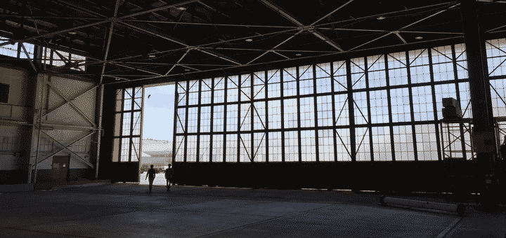

Upstream Joins Natel Energy
Hello Upstream friends, customers and supporters!
We have big, happy news to share with you today. Upstream is joining {^Natel Energy}!
To those of you who know us well, this may come as a surprise. Heck — we weren’t even planning on raising money! But when we first met Gia and Abe Schneider in Boston earlier this year, it became immediately clear that we had the same mission “to create economic forces that drive environmental good.” To add to that, Natel’s board is an incredible group motivated by environmental conservation.
 Natel’s massive hangar in Alameda
{kind=link}
So what does this mean for our work?
- We now have the support to grow Upstream’s existing products into an integrated dashboard for planning and monitoring freshwater project implementation.
- We are growing {^our team} so that we can move faster and explore new applications of our technology. Interested in satellite imagery/machine learning/helping the environment? Get in touch!
- We are working closely with Natel’s development team (surprise!) to create repeatable, economically viable conservation finance projects by leveraging Upstream’s platform to scale Natel’s {^Restoration Hydro}.
Marshall Moutenot & Alden Keefe Sampson
Upstream Tech
In parallel, we met Gia Schneider from Natel Energy via a meandering series of introductions. Natel Energy developes a hydropower turbine that uniquely allows for 100% safe fish passage. After breakfast together in Boston, we realized we were working on the same underlying problems from different angles: Natel Energy via hardware and project development; Upstream Tech via software solutions - both with the aim at improving the health of watersheds and building climate resilience. After a few months of discussion and brainstorming, we decided to {join forces}. Learning about hydropower via Gia and the Natel team, we realized there was an opportunity to apply our machine learning and satellite technology to watershed management and planning, and more specifically starting with hydropower operations. This was the birth of our second product, HydroForecast.
Two Years In - How We Work at Upstream
It’s sort of like the “triple bottom line” of investing (financial, social and environmental returns), but for day-to-day work. There are, of course professions where this is the default: teaching, social work, activism, journalism, etc. In our case we were looking specifically at technology’s role. And so far, so good! 2 years in, we’re working with some of the most incredible conservation groups, growing the team, and learning from some of the brightest folks in this line of work. We’ve also {joined Natel Energy}, which has opened many new doors and allowed us the stability to take greater risks.